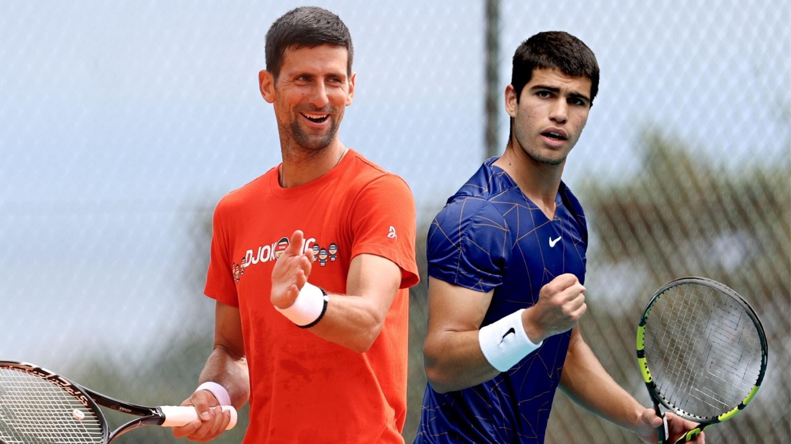

When You Forget How to Lose
A lot of young phenoms—the likes of Carlos Alcaraz, Holger Rune, Lorenzo Musetti, and Ben Shelton—made a name for themselves on the ATP Tour last year. For the most part, Carlos “Carlitos” Alcaraz stole the show in that…

A lot of young phenoms—the likes of Carlos Alcaraz, Holger Rune, Lorenzo Musetti, and Ben Shelton—made a name for themselves on the ATP Tour last year. For the most part, Carlos “Carlitos” Alcaraz stole the show in that…

Avid fans of tennis are likely aware of the rating system used by the ATP (Association of Tennis Professionals) Tour. However, most commentators and revered tennis analysts (such as Jeff Sackmann) maintain the notion…